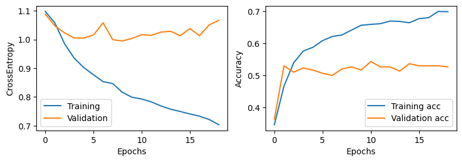

Video Classification with CNN+RNN and CNN+MLP: A Comparative Study
Introduction
Video classification is a challenging task due to the temporal dependencies between frames. Unlike image classification, where individual frames are independent, video classification requires models that can capture sequential patterns. This study aims to compare two approaches:
CNN+RNN: Uses a pre-trained MobileNet CNN for feature extraction, followed by an RNN model.
CNN+MLP: Uses the same CNN for feature extraction but applies a Multi-Layer Perceptron (MLP) instead of an RNN, treating frames independently.
Dataset
The dataset used in this project is the Something Something v2 dataset, which consists of short video clips belonging to various action categories. Each video is represented by 16 frames sampled at equal intervals.
Sample Videos
Below are three example videos from the dataset, showcasing the 3 different categories:
Putting something behind something
Putting something in front of something
Putting something next to something
Feature Extraction with CNN
The MobileNet CNN is used to extract features from each video frame.
Input to CNN: A single video frame (RGB, resized to 224x224).
CNN Output: A feature vector of size 320 for each frame.
The extracted features are then used as inputs for the RNN (GRU) or MLP, which attempt to classify the videos.
Training Setup
The dataset was split as follows:
Training set: 800 videos per category. -> 2400 total videos
Validation set: 100 videos per category. -> 300 total videos
Test set: 100 videos per category. -> 300 total videos
Model Architecture And Training Details
Category
CNN+RNN
CNN+MLP
Sequence Model
2-layer Bidirectional GRU
Fully connected MLP
Input Size
320 (CNN feature output)
320 (CNN feature output)
Hidden Size
16
16 (first layer), 8 (second layer)
Number of Layers
2
3 (Fully connected layers)
Activation Function
GRU internal activations
ReLU
Dropout
0.35
0.3 (after first and second layers)
Bidirectional
Yes
No
Fully Connected Layer
Linear(hidden_size * 2 → num_classes)
Linear(320 → 16 → 8 → num_classes)
Loss Function
CrossEntropyLoss
CrossEntropyLoss
Optimizer
Adam
Adam
Learning Rate
0.0025
0.001
Batch Size
32
32
Early Stopping
Yes (based on validation loss improvement)
Yes (based on validation loss improvement)
Results
Performance Comparison
The following results summarize the accuracy of both models:
CNN+RNN
CNN+MLP

Confusion Matrices
CNN+RNN Model
CNN+MLP Model
Example Predictions
CNN+RNN Predictions:
The predictions are from a model that achived 57.33% test accuracy
Video 1: Predicted Class = "behind", Actual Class = "behind"
Video 2: Predicted Class = "next_to", Actual Class = "in_front"
Video 3: Predicted Class = "next_to", Actual Class = "next_to"
CNN+MLP Predictions:
The predictions are from a model that achived 44.33% test accuracy
Video 1: Predicted Class = "next_to", Actual Class = "behind"
Video 2: Predicted Class = "next_to", Actual Class = "in_front"
Video 3: Predicted Class = "in_front", Actual Class = "next_to"
Conclusion
In this study, the CNN+RNN model demonstrated better performance compared to the CNN+MLP model. The key takeaways are:
Sequences matter: The RNN model performed better because it could recognize patterns across multiple frames.
MLP struggles with time: Since the MLP treated each frame independently, it failed to capture the relationships between frames, leading to lower accuracy.
Potential improvements: Future research could explore transformer-based models, which have shown promise in handling sequential data more effectively.